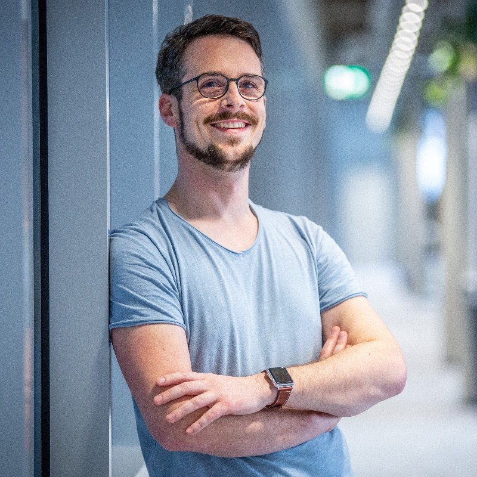

Contatto
Contatto
iPhysics by machineering
La piattaforma per creare rapidamente il Digital Twin nella costruzione di macchine – ben oltre il solo Virtual Commissioning. iPhysics collega tutte le fasi del processo su un’unica piattaforma e riproduce digitalmente l’intero ciclo di vita della macchina.
Vivere l’impianto — prima che sia costruito.
Ancora prima dell’acquisto i vostri clienti vivono il loro impianto come modello 3D interattivo – e vedono i propri processi già in azione. Le decisioni d’acquisto diventano più rapide, sicure e convincenti.
Sviluppare in parallelo invece di correggere a posteriori.
Progettazione meccanica, elettrica e software lavorano in parallelo sullo stesso prototipo digitale. Gli errori vengono individuati presto.
Testare virtualmente il commissioning prima che l’impianto esista.
Il software PLC reale gira sul Digital Twin prima che l’impianto esista fisicamente. Nessuna brutta sorpresa al commissioning.
Formazione in anticipo — senza fermare la produzione.
I vostri collaboratori imparano direttamente sul modello digitale – prima del commissioning e in parallelo alla produzione, senza fermi.
Il Digital Twin è fornito con la macchina, non aggiunto dopo.
Il Digital Twin diventa un prodotto in dotazione: i vostri clienti lo usano per i cambi prodotto, l’ottimizzazione degli attrezzaggi e l’onboarding dei nuovi collaboratori.

“Con iPhysics abbiamo sviluppato una piattaforma di simulazione basata sulla fisica che libera il Digital Twin dal silo dell’engineering e lo rende la piattaforma centrale lungo l’intero ciclo di vita della macchina.”


Dal layout 2D al Digital Twin incluso il Virtual Commissioning
Weber Food Technology è tra i principali fornitori di soluzioni per l’industria alimentare – specializzata nel taglio, confezionamento e lavorazione automatizzati di salumi, formaggi e prodotti convenience. Oltre 2.000 dipendenti, cinque sedi in Germania, linee complete complesse. E clienti che oggi si aspettano più di un disegno 2D.

“Con iPhysics diamo vita ai nostri impianti prima ancora della prima vite. Validiamo le linee con dati in tempo reale, individuiamo i colli di bottiglia in anticipo, testiamo l’ergonomia con visori VR e formiamo gli operatori senza un solo fermo di produzione.”

Il risultato: tempi di sviluppo più brevi, meno cicli di iterazione, nessun prototipo fisico – e un cliente che non riceve una soluzione qualsiasi, ma dimostrabilmente la migliore.
Il Digital Twin per l’intero ciclo di vita delle vostre macchine. Dalla prima presentazione commerciale alla manutenzione – una piattaforma, tutti i vantaggi.
Germany
Quattro fasi. ROI massimo.
iPhysics è la vostra piattaforma di simulazione 3D per il Virtual Commissioning – e molto di più.
Vendere prima di costruire la macchina
Il vostro team vendite presenta la macchina virtualmente dal cliente – prima ancora che sia costruita. Il configuratore 3D la adatta in tempo reale alle richieste del cliente, lo showroom nel metaverso rende gli impianti fruibili 24 ore su 24 – senza costi di trasferta, senza coordinare agende. I clienti ‘toccano con mano’ la macchina prima della decisione d’acquisto: fino a +40% di tasso di chiusura.
Testare prima della produzione
Invece di prototipi fisici validate virtualmente: verifica delle collisioni a schermo, ottimizzazione del tempo ciclo sul Digital Twin, modifiche senza fermare la produzione. Questo riduce i costi di sviluppo in media del 50%.
Virtual Commissioning senza trasferte
Il Virtual Commissioning avviene in ufficio, non dal cliente. Il software PLC viene testato senza hardware – l’80% degli errori è eliminato prima che il vostro team parta. Più macchine in parallelo, tempo di commissioning più breve fino al 75%: tecnici più produttivi, clienti produttivi prima.
Formare senza fermi macchina
Il training da remoto sul Digital Twin rende possibile il service globale dalla Germania: formare gli operatori in tutto il mondo prima che la macchina arrivi on site – e in seguito senza fermi. La manutenzione predittiva rende più precise manutenzioni e previsioni dei ricambi, il troubleshooting riesce spesso da remoto. Fino a −60% di costi di trasferta con una soddisfazione dei clienti più alta.
Cosa rende machineering unica
Guidata dai titolari da 15 anni
Stabilità e agilità: niente logiche trimestrali, ma partnership a lungo termine. Decisioni dirette.

Fucina di innovazione Made in Germany
Mentre i grandi gruppi pianificano, noi consegniamo. Tempi di reazione rapidi, zero burocrazia.
Assistenza personale invece di numeri di ticket
Non siete un ticket, siete il nostro partner. Assistenza uno a uno.
Leadership tecnologica & di mercato
Focus sull’innovazione. Indipendente dai fornitori, nessun vendor lock-in. Sistema aperto:
Indipendenza dai fornitori
“iPhysics funziona con il vostro controllore – Siemens, Beckhoff, B&R o Rockwell. Nessun vendor lock-in. Nessuna dipendenza.”
Architettura aperta
“Interfacce aperte invece di sistemi chiusi. iPhysics si integra nella vostra infrastruttura esistente – non il contrario.”
Certificazioni
“Sviluppato e certificato secondo gli standard industriali – per l’impiego in ambienti di produzione critici per la sicurezza.”
Un modello che si inserisce nell’intera vostra toolchain
Dal CAD e PDM alla programmazione di robot e PLC fino alla visualizzazione in tempo reale: iPhysics è aperta e collega i vostri sistemi esistenti indipendentemente dal produttore.

Il vostro messaggio — direttamente al nostro team.
Nessun sistema di ticket, nessuna attesa: la vostra richiesta arriva direttamente agli esperti di simulazione di machineering — e riceve una risposta personale.
Preferite parlarne direttamente? Scegliete un appuntamento demo